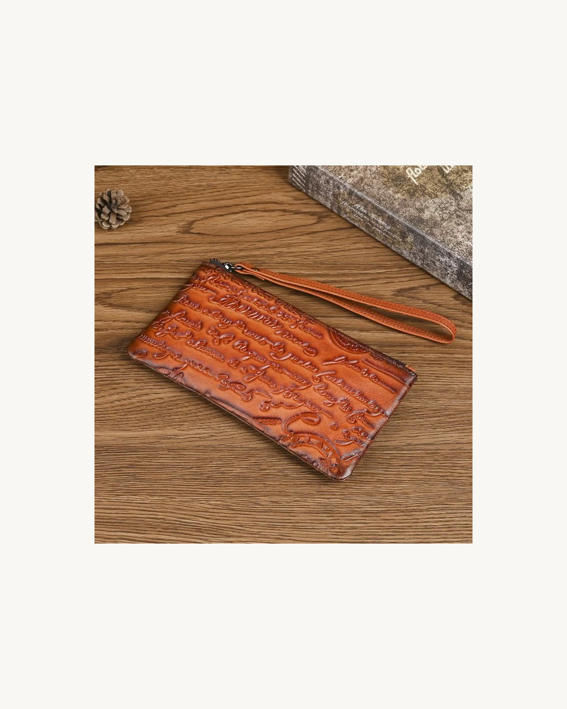
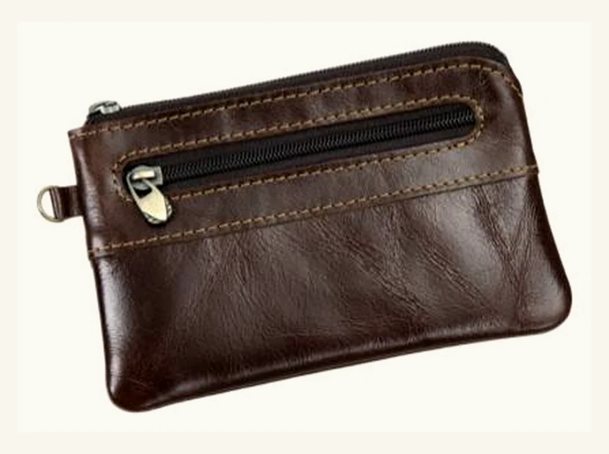
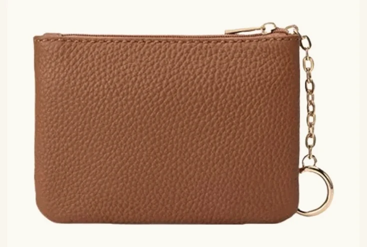

Vintage Leather
Coin Case
A compact coin case reference for private-label small leather goods, giftable accessories and coordinated retail collections.
This page is prepared for OEM and private-label development, with details intended for closure review, leather direction and sample discussion.

Reference Details for Buyer Review
These references help start a sampling discussion. Final specifications can be adjusted depending on leather texture, closure type, lining, logo method and packaging details.
Reference Views for Sampling Review
Use these views to review compact size, zipper structure, flat pouch proportion, hardware direction and logo placement before sample development.


Additional closure, lining and packaging details can be prepared during sample discussion.
Coin Case Details Buyers Usually Confirm
Small leather goods need controlled proportions. These details can be adjusted before bulk production.
Customization Options for Private-Label Orders
HASSION can adapt compact coin case formats into coordinated small leather goods collections through material, hardware, logo and packaging decisions.
What to Send Us for a Faster Quote
A clear brief helps the team review feasibility, sampling details and production planning more quickly.
- Reference photo or physical sample
- Target size and storage use
- Closure type, zipper, clasp or hardware requirement
- Logo file or branding requirement
- Leather / color direction
- Lining and edge finishing requirement
- Estimated order quantity
- Packaging requirement
- Target market or retail price range, if available
Start a Coin Case OEM Project
Share your target size, closure direction, logo file, material preference and quantity. Our team can help review sample details and production feasibility.